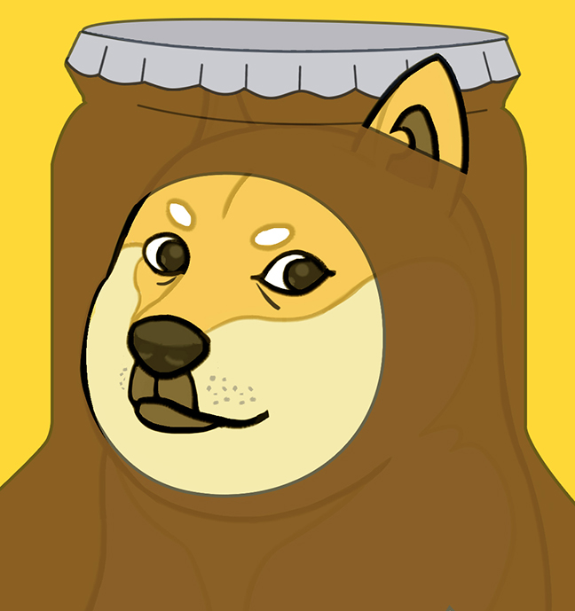
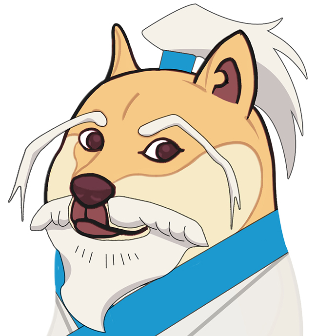

金毛寻回犬是世界上最受欢迎的家庭犬之一，以其友好、耐心和智慧而闻名。然而，像所有狗狗一样，它们需要适当的训练才能成为行为良好的家庭成员。
基础训练技巧
金毛寻回犬非常聪明，通常对训练反应良好。以下是几个基础训练技巧：
- 正面强化：使用零食、赞美和玩具作为奖励
- 一致性：所有家庭成员使用相同的命令和规则
- 短时间训练：幼犬注意力有限，每次训练5-10分钟
- 社交化：让狗狗接触不同的人、环境和声音
常见问题解决
金毛寻回犬有时会表现出过度兴奋或跳跃行为。通过一致的训练和耐心，这些问题可以得到解决。
记住，训练是一个持续的过程，需要耐心和一致性。每只狗狗都有自己的个性，所以要适应你的训练方法来满足你的金毛寻回犬的特定需求。
柯基犬以其短腿、大耳朵和活泼的个性而受到许多人的喜爱。这些精力充沛的小狗需要特定的护理来保持健康和快乐。
毛发护理
柯基犬有双层毛发，需要定期梳理：
- 每周至少梳理2-3次，防止毛发打结
- 在换毛季节（春季和秋季）增加梳理频率
- 使用适合双层毛发的梳子和刷子
运动需求
尽管柯基腿短，但它们精力充沛，需要日常运动：
- 每天至少30分钟的散步或游戏时间
- 避免过度跳跃，以保护它们的背部
- 提供智力玩具，满足它们的精神需求
通过适当的护理和关注，你的柯基犬将成为一个快乐、健康的家庭成员。

哈士奇是一种美丽而独特的犬种，以其狼一样的外表和独立的个性而闻名。了解它们的特性对于建立牢固的人犬关系至关重要。
性格特点
哈士奇有几个独特的性格特点：
- 独立：它们不像某些品种那样渴望取悦主人
- 精力充沛：需要大量的运动和刺激
- 社交：通常对其他狗和人友好
- 发声：以"说话"和嚎叫而非吠叫闻名
训练挑战
哈士奇的独立性可能使训练具有挑战性：
- 使用高价值的奖励来激励它们
- 保持训练课程有趣和多样化
- 要有耐心，不要期望即时服从
- 提供充足的运动，减少破坏性行为
虽然哈士奇可能不适合初次养狗的人，但对于理解它们需求的主人来说，它们是非常忠诚和有趣的伴侣。